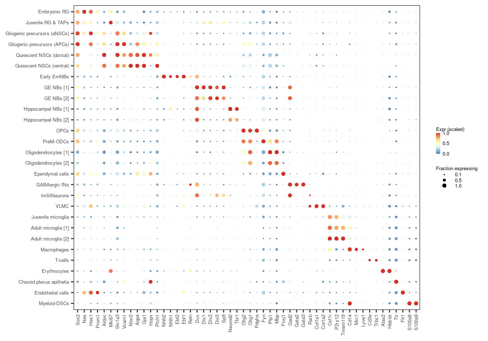
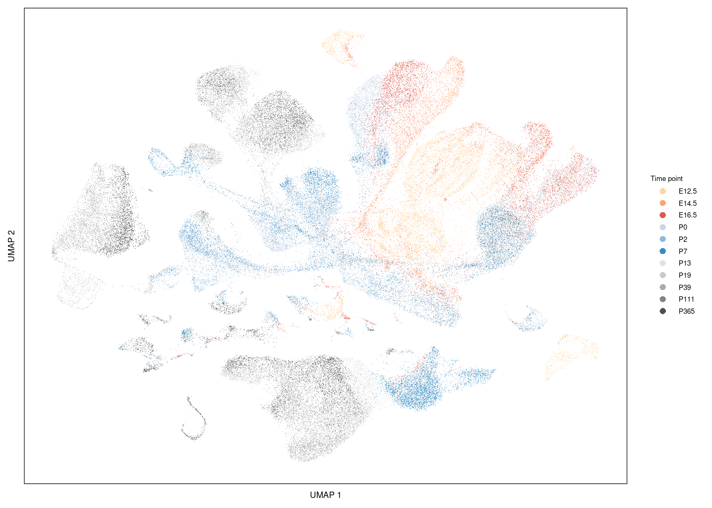
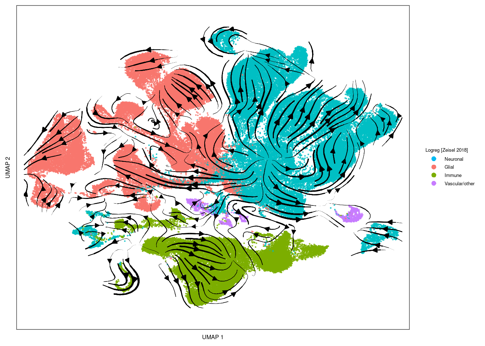
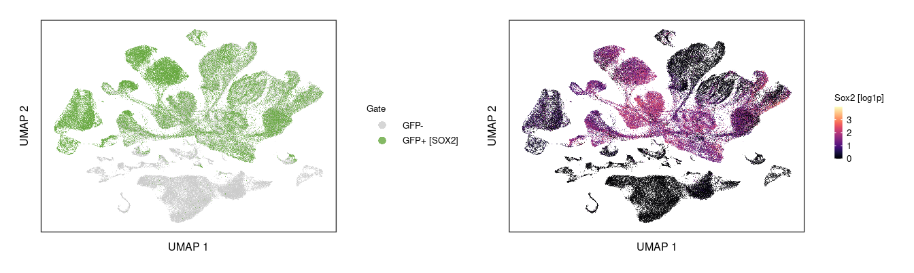
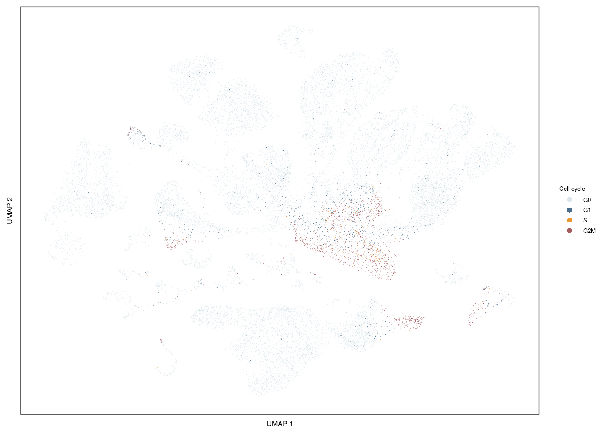
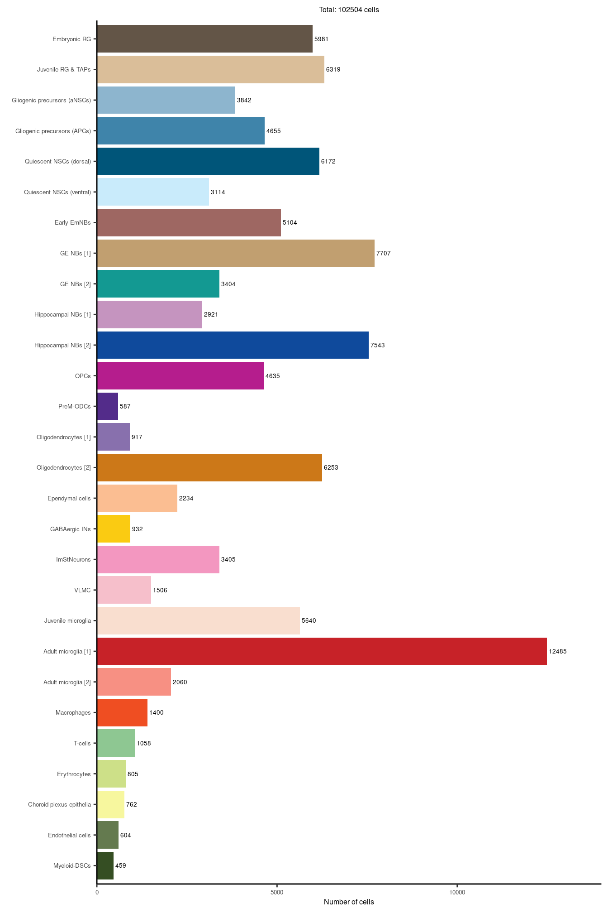
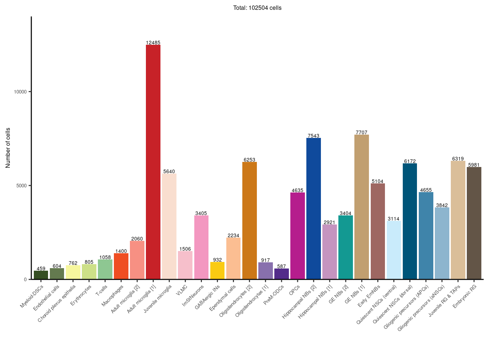
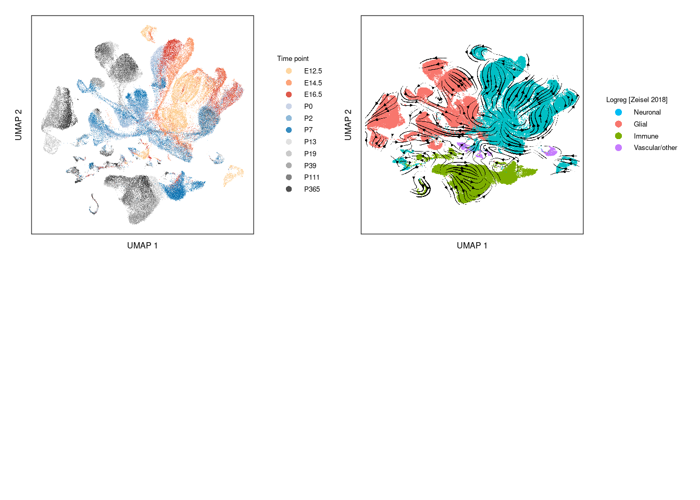
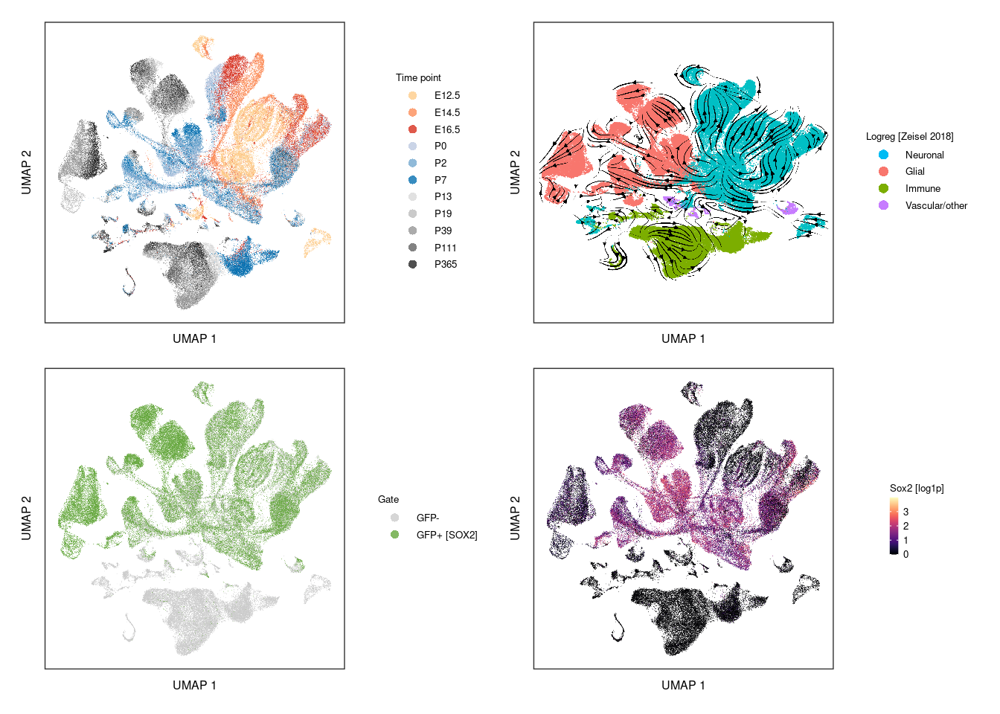

Last updated: 2021-03-23
Checks: 7 0
Knit directory: forebrain-atlas_workflowr/
This reproducible R Markdown analysis was created with workflowr (version 1.6.2). The Checks tab describes the reproducibility checks that were applied when the results were created. The Past versions tab lists the development history.
Great! Since the R Markdown file has been committed to the Git repository, you know the exact version of the code that produced these results.
Great job! The global environment was empty. Objects defined in the global environment can affect the analysis in your R Markdown file in unknown ways. For reproduciblity it’s best to always run the code in an empty environment.
The command set.seed(20210320) was run prior to running the code in the R Markdown file. Setting a seed ensures that any results that rely on randomness, e.g. subsampling or permutations, are reproducible.
Great job! Recording the operating system, R version, and package versions is critical for reproducibility.
Nice! There were no cached chunks for this analysis, so you can be confident that you successfully produced the results during this run.
Great job! Using relative paths to the files within your workflowr project makes it easier to run your code on other machines.
Great! You are using Git for version control. Tracking code development and connecting the code version to the results is critical for reproducibility.
The results in this page were generated with repository version da0cf96. See the Past versions tab to see a history of the changes made to the R Markdown and HTML files.
Note that you need to be careful to ensure that all relevant files for the analysis have been committed to Git prior to generating the results (you can use wflow_publish or wflow_git_commit). workflowr only checks the R Markdown file, but you know if there are other scripts or data files that it depends on. Below is the status of the Git repository when the results were generated:
Untracked files:
Untracked: code/core_functions.R
Untracked: code/core_functions_supp.R
Untracked: code/core_settings.R
Untracked: data/AUC_pathways/
Untracked: data/Ependymoma_2020/
Untracked: data/Richards_2021/
Untracked: data/URD/
Untracked: data/annot/
Untracked: data/cyclone/
Untracked: data/external_metadata/
Untracked: data/forebrain_normal.h5ad
Untracked: data/forebrain_normal_E12_5.h5ad
Untracked: data/forebrain_normal_E12_5_subset_neuronal_glial.h5ad
Untracked: data/forebrain_normal_E14_5.h5ad
Untracked: data/forebrain_normal_E14_5_subset_neuronal_glial.h5ad
Untracked: data/forebrain_normal_E16_5.h5ad
Untracked: data/forebrain_normal_E16_5_subset_neuronal_glial.h5ad
Untracked: data/forebrain_normal_P0.h5ad
Untracked: data/forebrain_normal_P0_subset_neuronal_glial.h5ad
Untracked: data/forebrain_normal_P111.h5ad
Untracked: data/forebrain_normal_P111_subset_neuronal_glial.h5ad
Untracked: data/forebrain_normal_P13.h5ad
Untracked: data/forebrain_normal_P13_subset_neuronal_glial.h5ad
Untracked: data/forebrain_normal_P19.h5ad
Untracked: data/forebrain_normal_P19_subset_neuronal_glial.h5ad
Untracked: data/forebrain_normal_P2.h5ad
Untracked: data/forebrain_normal_P2_subset_neuronal_glial.h5ad
Untracked: data/forebrain_normal_P365.h5ad
Untracked: data/forebrain_normal_P365_subset_neuronal_glial.h5ad
Untracked: data/forebrain_normal_P39.h5ad
Untracked: data/forebrain_normal_P39_subset_neuronal_glial.h5ad
Untracked: data/forebrain_normal_P7.h5ad
Untracked: data/forebrain_normal_P7_subset_neuronal_glial.h5ad
Untracked: data/forebrain_normal_merged_RG_NSC_lineage.h5ad
Untracked: data/forebrain_normal_merged_RG_aNSC_lineage.h5ad
Untracked: data/forebrain_normal_merged_subset_neuronal_glial.h5ad
Untracked: data/forebrain_normal_merged_subset_neuronal_glial_cleaned.h5ad
Untracked: data/forebrain_normal_merged_subset_neuronal_glial_cleaned_harmony.h5ad
Untracked: data/forebrain_normal_merged_subset_neuronal_glial_subset_RG_OPC_NSC_lineage.h5ad
Untracked: data/forebrain_normal_merged_subset_neuronal_glial_subset_RG_OPC_NSC_lineage_cleaned.h5ad
Untracked: data/forebrain_normal_subset_OPCs.h5ad
Untracked: data/forebrain_normal_subset_RG.h5ad
Untracked: data/forebrain_normal_subset_aNSCs.h5ad
Untracked: data/forebrain_normal_subset_embryonic_RG.h5ad
Untracked: data/forebrain_normal_subset_embryonic_RG_cleaned.h5ad
Untracked: data/forebrain_normal_subset_embryonic_RG_cleaned_wo_gliogenic.h5ad
Untracked: data/forebrain_normal_subset_ependymal.h5ad
Untracked: data/forebrain_normal_subset_ependymal_cleaned.h5ad
Untracked: data/forebrain_normal_subset_juvenile_RG_TAPs.h5ad
Untracked: data/forebrain_normal_subset_juvenile_RG_TAPs_subset_juvenile_RG.h5ad
Untracked: data/forebrain_normal_subset_neuronal_glial.h5ad
Untracked: data/forebrain_normal_subset_neuronal_glial_cleaned.h5ad
Untracked: data/forebrain_normal_subset_neuronal_glial_cleaned_subset_NBs.h5ad
Untracked: data/forebrain_normal_subset_neuronal_glial_cleaned_subset_NBs_cleaned.h5ad
Untracked: data/forebrain_normal_subset_neuronal_glial_cleaned_subset_OPCs.h5ad
Untracked: data/forebrain_normal_subset_neuronal_glial_cleaned_subset_RG.h5ad
Untracked: data/forebrain_normal_subset_neuronal_glial_cleaned_subset_RG_NSC_OPC_lineage.h5ad
Untracked: data/forebrain_normal_subset_neuronal_glial_cleaned_subset_RG_NSC_lineage.h5ad
Untracked: data/forebrain_normal_subset_neuronal_glial_cleaned_subset_RG_NSC_lineage_cleaned.h5ad
Untracked: data/forebrain_normal_subset_neuronal_glial_cleaned_subset_RG_NSC_lineage_v2.h5ad
Untracked: data/forebrain_normal_subset_neuronal_glial_cleaned_subset_RG_NSC_lineage_v2_cleaned.h5ad
Untracked: data/forebrain_normal_subset_neuronal_glial_cleaned_subset_ependymal.h5ad
Untracked: data/forebrain_normal_subset_neuronal_glial_cleaned_subset_ependymal_cleaned.h5ad
Untracked: data/forebrain_normal_subset_neuronal_glial_cleaned_subset_neuroblasts.h5ad
Untracked: data/forebrain_normal_subset_neuronal_glial_cleaned_subset_qNSCs.h5ad
Untracked: data/forebrain_normal_subset_qNSCs.h5ad
Untracked: data/gene-groups/
Untracked: data/logreg/
Untracked: data/metadata/
Untracked: data/metadata_QC_normal.csv.gz
Untracked: data/metadata_QC_normal_pass.csv.gz
Untracked: data/metadata_experiment.tsv
Untracked: data/monocle_3/
Untracked: data/pagoda/
Untracked: data/scenic/
Untracked: data/scrublet_scores/
Untracked: data/supplementary_data/
Untracked: figures/
Untracked: output/normal/
Untracked: output/normal_merged_RG_NSC_lineage/
Untracked: output/normal_merged_RG_aNSC_lineage/
Untracked: output/normal_subset_OPCs/
Untracked: output/normal_subset_embryonic_RG_cleaned/
Untracked: output/normal_subset_ependymal_cleaned/
Untracked: output/normal_subset_neuronal_glial_cleaned_subset_NBs_cleaned/
Untracked: output/normal_subset_neuronal_glial_cleaned_subset_RG_NSC_lineage/
Untracked: output/normal_subset_neuronal_glial_cleaned_subset_qNSCs/
Untracked: output/normal_subset_qNSCs/
Unstaged changes:
Deleted: analysis/about.Rmd
Deleted: analysis/license.Rmd
Note that any generated files, e.g. HTML, png, CSS, etc., are not included in this status report because it is ok for generated content to have uncommitted changes.
There are no past versions. Publish this analysis with wflow_publish() to start tracking its development.
Overview of the developmental data-set.
knitr::opts_chunk$set(autodep = TRUE)
library(ggplot2)
library(viridis)
library(patchwork)
library(ggrepel)
library(readr)
library(dplyr)
library(tibble)
library(knitr)
library(kableExtra)
library(reticulate)
source("code/core_settings.R")
source("code/core_functions.R")
source("code/core_functions_supp.R")# set parameters
fileID = "normal"
leiden_res = 'leiden_0_4'
leiden_res_annot = 'annot_leiden'
adata_path = paste0('data/forebrain_', fileID, '.h5ad')
# celltype_colours = colour_map
# colour_celltypes = colour_map
annot_order = names(celltype_colours)#repl_python()
py_run_string("import numpy as np")
py_run_string("import anndata as ad")
py_run_string("adata = ad.read_h5ad(r.adata_path)")metadata_scanpy = as_tibble(py$adata$obs, rownames="cellID") %>%
rename(mt_frac = percent_mito) %>%
mutate(UMAP_dim1 = py$adata$obsm[['X_umap']][,1],
UMAP_dim2 = py$adata$obsm[['X_umap']][,2])
metadata_experiment = read_tsv("data/metadata_experiment.tsv")
results_cyclone = read_csv("data/cyclone/cyclone_merged.csv.gz", col_types="ccddd") %>%
mutate(sampleID = sapply(cellID, function(cell) strsplit(cell, split="-")[[1]][3])) %>%
left_join(metadata_experiment, by="sampleID") %>%
mutate(cellID = gsub("-1", "", cellID)) %>%
select(cellID, cyclone, cyclone_G1, cyclone_S, cyclone_G2M)
results_logreg = read_csv(paste0("data/logreg/logreg_Zeisel_2018_normal.csv.gz"))
# filter QC
metadata = left_join(metadata_scanpy, results_cyclone, by="cellID") %>%
mutate(cyclone = factor(cyclone, levels=c("G1", "S", "G2M"))) %>%
mutate(timepoint = factor(timepoint, levels=unique(timepoint)[order(unique(postnatal_day))])) %>%
left_join(results_logreg, by="cellID") %>%
mutate(leiden = get(leiden_res))metadata = metadata %>%
mutate(prediction_TaxonomyRank1 = gsub("Neurons", "Neuronal", prediction_TaxonomyRank1)) %>%
mutate(prediction_TaxonomyRank1 = gsub("^Glia$", "Glial", prediction_TaxonomyRank1)) %>%
mutate(gate_gfp = gsub("SOX2_-ve", "GFP-", gate)) %>%
mutate(gate_gfp = gsub("SOX2_\\+ve", "GFP+ [SOX2]", gate_gfp)) %>%
mutate(annot_leiden = plyr::revalue(annot_leiden, c("[unclear/debris]" = NA)))marker_list = c("Sox2", "Nes", "Hes1", "Prom1", "Aldoc", "Mki67", "Slc1a3", "Vcam1",
"Ntsr2", "Aqp4", "Gja1", "Hopx", "Ptch1", "Nhlh2", "Nhlh1", "Ebf2",
"Ebf1", "Reln", "Dcx", "Dlx1", "Dlx2", "Dlx5", "Sp9", "Neurod2",
"Tbr1", "Olig2", "Olig1", "Pdgfra", "Fyn", "Plp1", "Mbp", "Foxj1",
"Gad2", "Gata2", "Gata3", "Rarb", "Col1a1", "Col1a2", "Csf1r", "P2ry12",
"Tmem119", "Cd14", "Mrc1", "Lyve1", "Cd3e", "Trbc1", "Alas2", "Hbb-bt",
"Ttr", "Flt1", "S100a8", "S100a9")
tbl_expr = get_adata_raw_expr(marker_list)
tbl_DE_expr = metadata %>%
select(cellID, !!(leiden_res_annot)) %>%
mutate(clusterID = get(leiden_res_annot)) %>%
left_join(tbl_expr, by="cellID") %>%
tidyr::pivot_longer(starts_with("expr_"), names_to="geneID", values_to="expr") %>%
mutate(geneID = gsub("expr_", "", geneID)) %>%
group_by(geneID, clusterID) %>%
summarise(frac_expressed = sum(expr > 0)/length(expr),
expr_average = mean(expr)) %>%
ungroup() %>%
group_by(geneID) %>%
mutate(expr_scaled = expr_average/max(expr_average)) %>%
ungroup() %>%
mutate(geneID = factor(geneID, levels = marker_list)) %>%
mutate(clusterID = factor(clusterID, levels=rev(annot_order))) %>%
filter(!is.na(clusterID))`summarise()` has grouped output by 'geneID'. You can override using the `.groups` argument.# expr_Gene
plt_DE_dotplot = ggplot(tbl_DE_expr, aes(x=geneID, y=clusterID, size=frac_expressed, colour=expr_scaled)) +
geom_point(stroke=0) +
scale_size_continuous(range = c(0, 2.0), limits=c(0, 1), breaks = c(0.1, 0.5, 1.0)) +
theme_publication +
scale_colour_distiller(palette = 'RdYlBu', breaks=c(0, 0.5, 1), limits=c(0,1)) +
labs(x=NULL, y=NULL) +
labs(colour = "Expr (scaled)") +
guides(colour = guide_colorbar(barwidth = 0.3,
barheight = 1.5)) +
theme(axis.text.x = element_text(angle = 90, vjust=0.5, hjust=1)) +
labs(size = "Fraction expressing") +
theme(legend.spacing.y = unit(0.05, 'cm')) +
theme(legend.key.height = unit(0.2, "cm"))
# legend.key.width = unit(0.1, "cm"))
colour_map = c("E12.5"="#fdcc8a",
"E14.5"="#fc8d59",
"E16.5"="#d7301f",
"P0"="#bdc9e1",
"P2"="#74a9cf",
"P7"="#0570b0",
"P13"="#d9d9d9",
"P19"="#bdbdbd",
"P39"="#969696",
"P111"="#636363",
"P365"="#252525")
library(ggrastr)
plt_UMAP_day = ggplot(slice(metadata, sample(1:n())), aes(x=UMAP_dim1, y=UMAP_dim2, colour=timepoint)) +
# geom_point(size=0.05, alpha=0.8, shape=16) +
# geom_point_rast(size=0.05, alpha=0.8, shape=16, raster.dpi=300) +
# geom_point_rast(size=0.05, alpha=0.8, shape=16, raster.dpi=600) +
geom_point_rast(size=0.1, stroke=0, alpha=0.8, shape=16, raster.dpi=600) +
# scale_colour_viridis(discrete=T) +
scale_color_manual(values=colour_map) +
theme_publication +
labs(x="UMAP 1", y="UMAP 2") +
theme(axis.text.x=element_blank(),
axis.ticks.x=element_blank(),
axis.text.y=element_blank(),
axis.ticks.y=element_blank()) +
labs(colour="Time point") +
guides(colour = guide_legend(override.aes = list(size=2),
keyheight=0.3,
default.unit="cm"))
library(png)
library(grid)
tbl_annot_coarse_empty = tibble(annot_coarse = factor(c("Neuronal", "Glial", "Immune", "Vascular/other"), levels=c("Neuronal", "Glial", "Immune", "Vascular/other")),
UMAP_dim1 = c(0, 1, 0, 1),
UMAP_dim2 = c(0, 1, 0, 1))
plt_UMAP_empty = ggplot(tbl_annot_coarse_empty, aes(x=UMAP_dim1, y=UMAP_dim2, colour=annot_coarse)) +
# geom_blank() +
geom_point(shape=16, alpha=0) +
scale_color_manual(values=c("Neuronal"="#00BCF4",
"Glial"="#F8766D",
"Immune"="#7CAE00",
"Vascular/other"="#C77CFF"), drop=FALSE) +
theme_publication +
labs(x="UMAP 1", y="UMAP 2") +
theme(axis.text.x=element_blank(),
axis.ticks.x=element_blank(),
axis.text.y=element_blank(),
axis.ticks.y=element_blank()) +
labs(colour="Logreg [Zeisel 2018]") +
guides(colour = guide_legend(override.aes = list(alpha=1, size=2),
keyheight=0.3,
default.unit="cm"))
img_velo = readPNG("figures/figure_1/scvelo/scvelo_stochastic_normal_logreg_Zeisel_2018_dpi_600_no_legend.png")
g_velo = rasterGrob(img_velo, interpolate=TRUE)
plt_velocyto = plt_UMAP_empty +
annotation_custom(g_velo, xmin=-Inf, xmax=Inf, ymin=-Inf, ymax=Inf)
plt_UMAP_gate = ggplot(slice(metadata, sample(1:n())), aes(x=UMAP_dim1, y=UMAP_dim2, colour=gate_gfp)) +
geom_point_rast(size=0.1, stroke=0, alpha=0.8, shape=16, raster.dpi=600) +
# scale_colour_manual(values=c("SOX2_-ve"="#696969", "SOX2_+ve"="#AECEA5")) +
# scale_colour_manual(values=c("GFP-"="#CCCCCC", "GFP+ [SOX2]"="#83F52C")) +
scale_colour_manual(values=c("GFP-"="#CCCCCC", "GFP+ [SOX2]"="#65A83E")) +
theme_publication +
labs(x="UMAP 1", y="UMAP 2") +
theme(axis.text.x=element_blank(),
axis.ticks.x=element_blank(),
axis.text.y=element_blank(),
axis.ticks.y=element_blank()) +
labs(colour="Gate") +
guides(colour = guide_legend(override.aes = list(size=2),
keyheight=0.3,
default.unit="cm"))
# plt_UMAP_gate = plt_UMAP_gate +
# theme(legend.position="top") +
# theme(legend.margin=margin(-1.5, 0, -1.5, 0, unit='cm')) +
# theme(legend.background=element_blank())
plt_UMAP_Sox2 = plot_UMAP_expr("Sox2") +
guides(fill = guide_colorbar(barwidth = 0.3,
barheight = 2))
plt_UMAP_Sox2_rescaled = plt_UMAP_Sox2 + scale_colour_viridis(option="magma", rescaler = function(x, from = NULL) {
ifelse(x<2,
scales::rescale(x,
to = c(0, 0.5),
from = c(min(x, na.rm = TRUE), 2)),
scales::rescale(x,
to = c(0.5, 1),
from = c(2, max(x, na.rm = TRUE))))}) +
guides(colour = guide_colorbar(barwidth = 0.3,
barheight = 2)) +
labs(colour = "Sox2 [log1p]") +
scale_fill_viridis(option="magma", rescaler = function(x, from = NULL) {
ifelse(x<2,
scales::rescale(x,
to = c(0, 0.5),
from = c(min(x, na.rm = TRUE), 2)),
scales::rescale(x,
to = c(0.5, 1),
from = c(2, max(x, na.rm = TRUE))))})Scale for 'colour' is already present. Adding another scale for 'colour',
which will replace the existing scale.
expr_cellcycle = get_adata_raw_expr(c("Mki67", "Top2a"))
metadata_cc = metadata %>%
left_join(expr_cellcycle, by="cellID") %>%
mutate(cell_cycle = if_else(expr_Mki67 > 1 | expr_Top2a > 1, as.vector(cyclone), "G0")) %>%
mutate(cell_cycle = factor(cell_cycle, levels=c("G0", "G1", "S", "G2M"))) %>%
arrange(cell_cycle) %>%
slice(c(1:sum(cell_cycle == "G0"), sample((sum(cell_cycle == "G0") + 1):n())))plt_UMAP_cellcycle = ggplot(metadata_cc, aes(x=UMAP_dim1, y=UMAP_dim2, colour=cell_cycle)) +
geom_point_rast(size=0.05, stroke=0, alpha=0.8, shape=16, raster.dpi=600) +
scale_color_manual(values=c("G0"="#D0DFE6", "G1"="#19476F", "S"="#E47E00", "G2M"="#90353B")) +
theme_publication +
labs(x="UMAP 1", y="UMAP 2") +
theme(axis.text.x=element_blank(),
axis.ticks.x=element_blank(),
axis.text.y=element_blank(),
axis.ticks.y=element_blank()) +
labs(colour="Cell cycle") +
# labs(title=NULL) +
guides(colour = guide_legend(override.aes = list(size=2),
keyheight=0.3,
default.unit="cm"))
plt_UMAP_cellcycle
library(ggnewscale)
metadata_development = metadata %>%
mutate(leiden_annot = get(leiden_res_annot)) %>%
filter(!is.na(leiden_annot)) %>%
group_by(leiden_annot) %>%
summarise(n_cells = n()) %>%
mutate(leiden_annot = factor(leiden_annot, levels = rev(names(celltype_colours))))
plt_timeline_vertical = ggplot(metadata_development, aes(x=leiden_annot, y=n_cells, fill=leiden_annot)) +
geom_bar(stat="identity", position="dodge") +
geom_text(aes(label=n_cells, y=n_cells+50), size=1.78, hjust = 0) +
scale_fill_manual(values=celltype_colours) +
theme_publication +
labs(x=element_blank(), y="Number of cells") +
# scale_y_continuous(expand = c(0, 0), limits=c(0, 8400)) +
# scale_y_continuous(expand = c(0, 0), limits=c(0, 12990)) +
scale_y_continuous(expand = c(0, 0), limits=c(0, 14000)) +
coord_flip(clip = "off") +
theme(legend.position="none") +
theme(panel.border = element_blank(), axis.line = element_line(colour = "black")) +
# theme(axis.text.y = element_text(face = c(rep('plain', dim(metadata_development)[1] - 13)), rep('bold', 13))) +
labs(title=paste0("Total: ", sum(metadata_development$n_cells), " cells")) #+
# theme(axis.text.y = element_text(hjust=0))
# https://stackoverflow.com/questions/20571306/multi-row-x-axis-labels-in-ggplot-line-chart
plt_timeline_vertical
plt_timeline_horizontal = ggplot(metadata_development, aes(x=leiden_annot, y=n_cells, fill=leiden_annot)) +
geom_bar(stat="identity", position="dodge") +
geom_text(aes(label=n_cells, y=n_cells+20), size=1.78, hjust = 0.5, vjust=0) +
scale_fill_manual(values=celltype_colours) +
theme_publication +
labs(x=element_blank(), y="Number of cells") +
# scale_y_continuous(expand = c(0, 0), limits=c(0, 8400)) +
scale_y_continuous(expand = c(0, 0), limits=c(0, 14000)) +
# coord_flip(clip = "off") +
theme(legend.position="none") +
theme(panel.border = element_blank(), axis.line = element_line(colour = "black")) +
# theme(axis.text.y = element_text(face = c(rep('plain', dim(metadata_development)[1] - 13)), rep('bold', 13))) +
labs(title=paste0("Total: ", sum(metadata_development$n_cells), " cells")) +
theme(axis.text.x = element_text(angle = 45, hjust=1))
# theme(axis.text.x = element_text(angle = 45, vjust=0.5, hjust=1))
# theme(axis.text.y = element_text(hjust=0))
# https://stackoverflow.com/questions/20571306/multi-row-x-axis-labels-in-ggplot-line-chart
plt_timeline_horizontal
panel_time_velocyto_gate_Sox2_top_only = plt_UMAP_day + plt_velocyto + plot_spacer() + plot_spacer()
panel_time_velocyto_gate_Sox2_top_only
panel_time_velocyto_gate_Sox2 = plt_UMAP_day + plt_velocyto + plt_UMAP_gate + plt_UMAP_Sox2
panel_time_velocyto_gate_Sox2
ggsave("figures/figure_overview/dotplot_manual_markers_overview.pdf", plot=plt_DE_dotplot_full, height=10, width=18.3, units="cm")
ggsave("figures/figure_overview/panel_UMAP_GFP_Sox2_overview.pdf", plot=plt_UMAP_gate | plt_UMAP_Sox2, height=4.5, width=11.3, units="cm")
ggsave("figures/figure_overview/panel_UMAP_GFP_Sox2_rescaled_overview.pdf", plot=plt_UMAP_gate | plt_UMAP_Sox2_rescaled, height=4.5, width=11.3, units="cm")
ggsave("figures/figure_overview/UMAP_cell_cycle_overview.pdf", plot=plt_UMAP_cellcycle, height=6, width=9, units="cm")
ggsave("figures/figure_overview/barplot_cluster_cellcounts_overview_horizontal.pdf", plot=plt_timeline_horizontal, height=5, width=18.3, units="cm")
ggsave("figures/figure_overview/barplot_cluster_cellcounts_overview_vertical.pdf", plot=plt_timeline_vertical, height=12, width=8, units="cm")ggsave("figures/figure_overview/panel_UMAP_timepoints_velocyto_GFP_Sox2_overview.pdf", plot=panel_time_velocyto_gate_Sox2, height=10, width=18.3, units="cm")
ggsave("figures/figure_overview/panel_UMAP_timepoints_velocyto_GFP_Sox2_overview_top_only.pdf", plot=panel_time_velocyto_gate_Sox2_top_only, height=10, width=18.3, units="cm")
R version 4.0.3 (2020-10-10)
Platform: x86_64-pc-linux-gnu (64-bit)
Running under: Ubuntu 20.04.2 LTS
Matrix products: default
BLAS: /usr/lib/x86_64-linux-gnu/blas/libblas.so.3.9.0
LAPACK: /usr/lib/x86_64-linux-gnu/lapack/liblapack.so.3.9.0
locale:
[1] LC_CTYPE=en_GB.UTF-8 LC_NUMERIC=C
[3] LC_TIME=en_GB.UTF-8 LC_COLLATE=en_GB.UTF-8
[5] LC_MONETARY=en_GB.UTF-8 LC_MESSAGES=en_GB.UTF-8
[7] LC_PAPER=en_GB.UTF-8 LC_NAME=C
[9] LC_ADDRESS=C LC_TELEPHONE=C
[11] LC_MEASUREMENT=en_GB.UTF-8 LC_IDENTIFICATION=C
attached base packages:
[1] grid stats graphics grDevices utils datasets methods
[8] base
other attached packages:
[1] ggnewscale_0.4.5 png_0.1-7 ggthemes_4.2.4 reshape2_1.4.4
[5] ggrastr_0.2.3 reticulate_1.18 kableExtra_1.3.4 knitr_1.31
[9] tibble_3.1.0 dplyr_1.0.4 readr_1.4.0 ggrepel_0.9.1
[13] patchwork_1.1.1 viridis_0.5.1 viridisLite_0.3.0 ggplot2_3.3.3
[17] workflowr_1.6.2
loaded via a namespace (and not attached):
[1] Rcpp_1.0.6 svglite_2.0.0 lattice_0.20-41 tidyr_1.1.2
[5] ps_1.6.0 assertthat_0.2.1 rprojroot_2.0.2 digest_0.6.27
[9] utf8_1.1.4 R6_2.5.0 plyr_1.8.6 evaluate_0.14
[13] highr_0.8 httr_1.4.2 pillar_1.5.0 rlang_0.4.10
[17] rstudioapi_0.13 jquerylib_0.1.3 Matrix_1.3-2 rmarkdown_2.7
[21] labeling_0.4.2 webshot_0.5.2 stringr_1.4.0 munsell_0.5.0
[25] compiler_4.0.3 httpuv_1.5.5 vipor_0.4.5 xfun_0.21
[29] pkgconfig_2.0.3 systemfonts_1.0.1 ggbeeswarm_0.6.0 htmltools_0.5.1.1
[33] tidyselect_1.1.0 gridExtra_2.3 fansi_0.4.2 crayon_1.4.1
[37] withr_2.4.1 later_1.1.0.1 rappdirs_0.3.3 jsonlite_1.7.2
[41] gtable_0.3.0 lifecycle_1.0.0 DBI_1.1.1 git2r_0.28.0
[45] magrittr_2.0.1 scales_1.1.1 cli_2.3.1 stringi_1.5.3
[49] farver_2.1.0 fs_1.5.0 promises_1.2.0.1 xml2_1.3.2
[53] bslib_0.2.4 ellipsis_0.3.1 generics_0.1.0 vctrs_0.3.6
[57] RColorBrewer_1.1-2 Cairo_1.5-12.2 tools_4.0.3 glue_1.4.2
[61] beeswarm_0.2.3 purrr_0.3.4 hms_1.0.0 yaml_2.2.1
[65] colorspace_2.0-0 rvest_0.3.6 sass_0.3.1